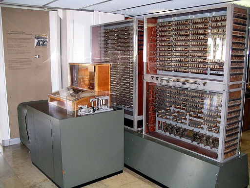
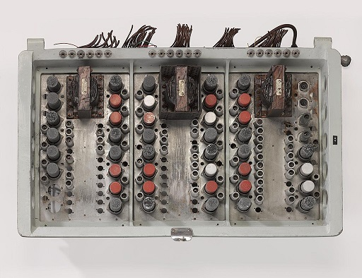

Although humans have been storing, retrieving, manipulating, and communicating information since the earliest writing systems were developed, the term information technology in its modern sense first appeared in a 1958 article published in the Harvard Business Review; authors Harold J. Leavitt and Thomas L. Whisler commented that "the new technology does not yet have a single established name. We shall call it information technology (IT)." Their definition consists of three categories: techniques for processing, the application of statistical and mathematical methods to decision-making, and the simulation of higher-order thinking through computer programs. The term is commonly used as a synonym for computers and computer networks, but it also encompasses other information distribution technologies such as television and telephones. Several products or services within an economy are associated with information technology, including computer hardware, software, electronics, semiconductors, internet, telecom equipment, and e-commerce.
Based on the storage and processing technologies employed, it is possible to distinguish four distinct phases of IT development: pre-mechanical (3000 BC — 1450 AD), mechanical (1450—1840), electromechanical (1840—1940), and electronic (1940 to present). This article focuses on the most recent period (electronic).
Information technology is also a branch of computer science, which can be defined as the overall study of procedure, structure, and the processing of various types of data. As this field continues to evolve across the world, the overall priority and importance has also grown, which is where we begin to see the introduction of computer science-related courses in K-12 education. However, concerns have been raised about this fact that most schools are lacking advanced-placement courses in this field.
History of Computer Technology
Main article: History of computing hardware

Zuse Z3
Looking at early computing, Alan Turing, J. Presper Eckert, and John Mauchly were considered to be some of the major pioneers of computer technology in the mid-1900s. Giving them such credit for their developments, most of their efforts were focused on designing the first digital computer. Along with that, topics such as artificial intelligence began to be brought up as Turing was beginning to question such technology of the time period.
Devices have been used to aid computation for thousands of years, probably initially in the form of a tally stick. The Antikythera mechanism, dating from about the beginning of the first century BC, is generally considered to be the earliest known mechanical analog computer, and the earliest known geared mechanism. Comparable geared devices did not emerge in Europe until the 16th century, and it was not until 1645 that the first mechanical calculator capable of performing the four basic arithmetical operations was developed.
Electronic computers, using either relays or valves, began to appear in the early 1940s. The electromechanical Zuse Z3, completed in 1941, was the world's first programmable computer, and by modern standards one of the first machines that could be considered a complete computing machine. During the Second World War, Colossus developed the first electronic digital computer to decrypt German messages. Although it was programmable, it was not general-purpose, being designed to perform only a single task. It also lacked the ability to store its program in memory; programming was carried out using plugs and switches to alter the internal wiring. The first recognizably modern electronic digital stored-program computer was the Manchester Baby, which ran its first program on 21 June 1948.
The development of transistors in the late 1940s at Bell Laboratories allowed a new generation of computers to be designed with greatly reduced power consumption. The first commercially available stored-program computer, the Ferranti Mark I, contained 4050 valves and had a power consumption of 25 kilowatts. By comparison, the first transistorized computer developed at the University of Manchester and operational by November 1953, consumed only 150 watts in its final version.
Several other breakthroughs in semiconductor technology include the integrated circuit (IC) invented by Jack Kilby at Texas Instruments and Robert Noyce at Fairchild Semiconductor in 1959, the metal-oxide-semiconductor field-effect transistor (MOSFET) invented by Mohamed Atalla and Dawon Kahng at Bell Laboratories in 1959, and the microprocessor invented by Ted Hoff, Federico Faggin, Masatoshi Shima, and Stanley Mazor at Intel in 1971. These important inventions led to the development of the personal computer (PC) in the 1970s, and the emergence of information and communications technology (ICT).
By the year of 1984, according to the National Westminster Bank Quarterly Review, the term 'information technology' had been redefined as "The development of cable television was made possible by the convergence of telecommunications and computing technology (…generally known in Britain as information technology).” We then begin to see the appearance of the term in 1990 contained within documents for the International Organization for Standardization (ISO).
Innovations in technology have already revolutionized the world by the twenty-first century as people were able to access different online services. This has changed the workforce drastically as thirty percent of U.S. workers were already in careers of this profession. 136.9 million people were personally connected to the Internet, which was equivalent to 51 million households. Along with Internet, new types of technology were also being introduced across the globe, which has improved efficiency and made things easier across the globe.buyers.
Along with technology revolutionizing society, millions of processes could be done in seconds. Innovations in communication were also crucial as people began to rely on the computer to communicate through telephone lines and cable. The introduction of email was a really big thing as "companies in one part of the world could communicate by e-mail with suppliers and buyers in another part of the world..."
Not only personally, computers and technology have also revolutionized the marketing industry, resulting in more buyers of their products. During the year of 2002, Americans have exceeded $28 billion in goods just over the Internet alone when e-commerce a decade later resulted in $289 billion in sales. And as computers are rapidly becoming more sophisticated by the day, they are becoming more used as people are becoming more reliant on them during the twenty-first century.
Electronic Data Processing
Main article: Electronic data processing

Ferranti Mark I
{kind=link}
Data Storage
Main article: Data storage
Databases
Main article: Database
All DMS consist of components, they allow the data they store to be accessed simultaneously by many users while maintaining its integrity. All databases are common in one point that the structure of the data they contain is defined and stored separately from the data itself, in a database schema.
In recent years, the extensible markup language (XML) has become a popular format for data representation. Although XML data can be stored in normal file systems, it is commonly held in relational databases to take advantage of their "robust implementation verified by years of both theoretical and practical effort." As an evolution of the Standard Generalized Markup Language (SGML), XML's text-based structure offers the advantage of being both machine and human-readable.
Data Retrieval
The terms "data" and "information" are not synonymous. Anything stored is data, but it only becomes information when it is organized and presented meaningfully. : 1–9 Most of the world's digital data is unstructured, and stored in a variety of different physical formats even within a single organization. Data warehouses began to be developed in the 1980s to integrate these disparate stores. They typically contain data extracted from various sources, including external sources such as the Internet, organized in such a way as to facilitate decision support systems (DSS). 40]: 4–6
Data Transmission

IBM card storage warehouse located in Alexandria, Virginia in 1959. This is where the government kept storage of punched cards.
Data Manipulation
the per capita capacity of the world's general-purpose computers doubled every 18 months during the same two decades;
the global telecommunication capacity per capita doubled every 34 months; the world's storage capacity per capita required roughly 40 months to double (every 3 years); and per capita broadcast information has doubled every 12.3 years.
Massive amounts of data are stored worldwide every day, but unless it can be analyzed and presented effectively it essentially resides in what have been called data tombs: "data archives that are seldom visited". To address that issue, the field of data mining — "the process of discovering interesting patterns and knowledge from large amounts of data" — emerged in the late 1980s.
Database Problems
Along with IT Departments and personnel, there are also different types of agencies that "strengthen" the workforce. The Department of Homeland Security (DHS) is one of those examples that do just that as they make sure all organizations have all of the different necessities to add infrastructure and security to protect them in the future from the different challenges that may lie head. Branching off of the DHS, many programs are in place as well to build cybersecurity awareness across the organization or workforce.
- Identify and quantify your cybersecurity workforce
- Understand workforce needs and skills gaps
- Hire the right people for clearly defined roles
- Enhance employee skills with training and professional development
- Create programs and experiences to retain top talent
Services
Disadvantages of e-mail: the presence of such a phenomenon as spam (massive advertising and viral mailings); the theoretical impossibility of guaranteed delivery of a particular letter; possible delays in message delivery (up to several days); limits on the size of one message and on the total size of messages in the mailbox (personal for users).
Search System
According to Statista, in October 2021, search engine usage was distributed as follows:
- Google — 86,64%;
- Bing — 7%;
- Yahoo! — 2.75%.
Perspectives
Academic Perspective
Undergraduate degrees in IT (B.S., A.S.) are similar to other computer science degrees. In fact, they oftentimes have the same foundational level courses. Computer science (CS) programs tend to focus more on theory and design, whereas Information Technology programs are structured to equip the graduate with expertise in the practical application of technology solutions to support modern business and user needs.
However this not true in all cases. For example, in India an engineering degree in Information Technology (B.Tech IT) is a 4-year professional course and it is considered as an equivalent degree to a degree in Computer Science and Engineering since they share strikingly similar syllabus across many universities in India.
B.Tech IT degree focuses heavily on mathematical foundations of computer science since students are taught calculus, linear algebra, graph theory and discrete mathematics in first two years. B.Tech. IT program also contains core computer science courses like Data Structures, Algorithm Analysis And Design, Compiler Design, Automata Theory, Computer Architecture, Operating Systems, Computer Networks etc.[55][56][original research?] And the graduate level entrance examination which is required for masters in engineering in India-GATE-is common for both CS and IT undergraduates.
Commercial and Employment Perspective
Many companies now have IT departments for managing the computers, networks, and other technical areas of their businesses. Companies have also sought to integrate IT with business outcomes and decision-making through a BizOps or business operations department.
In a business context, the Information Technology Association of America has defined information technology as "the study, design, development, application, implementation, support, or management of computer-based information systems".The responsibilities of those working in the field include network administration, software development and installation, and the planning and management of an organization's technology life cycle, by which hardware and software are maintained, upgraded, and replaced.